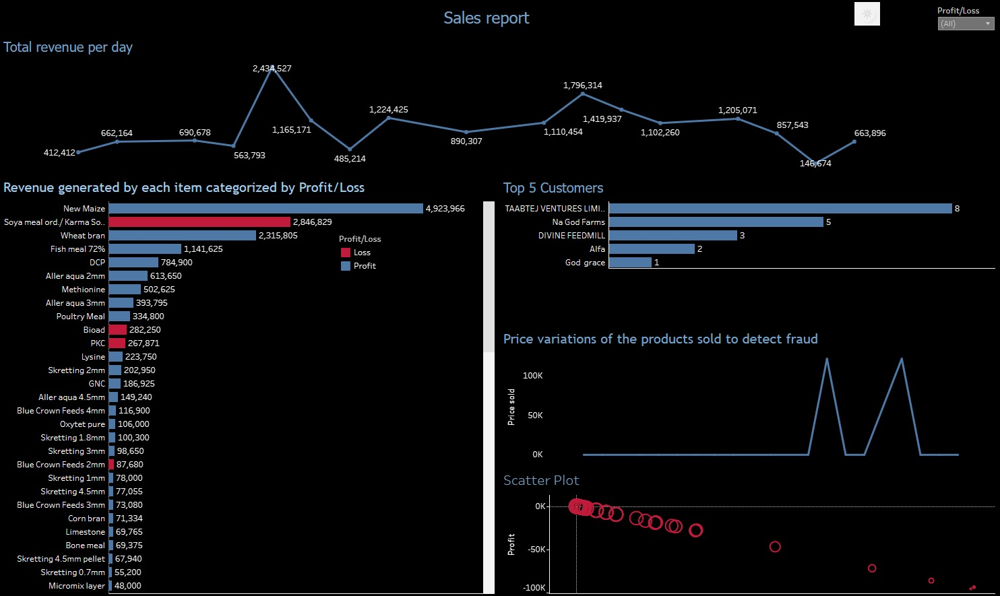
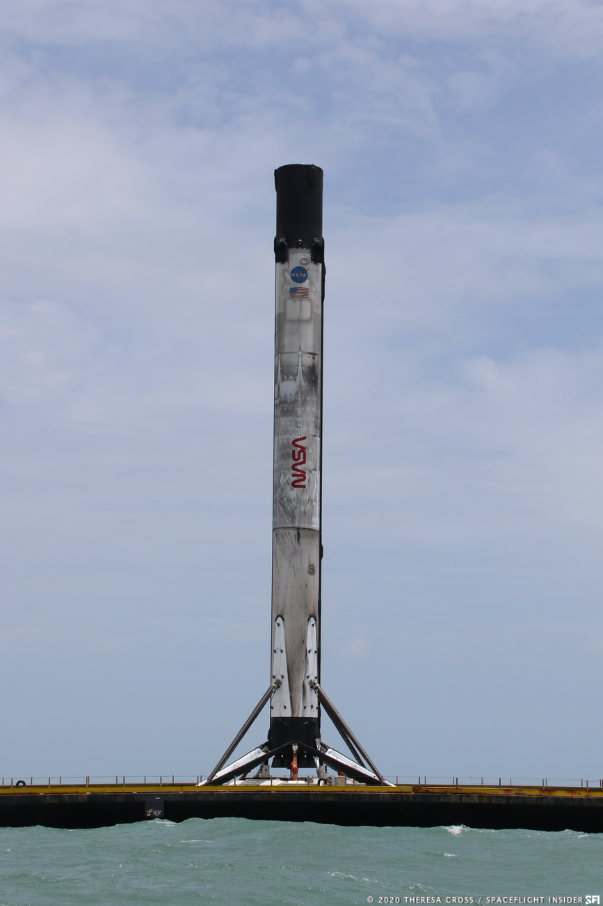

In this project, I scraped twitter's API to get tweets that contained the 2023 elections in Nigeria. Presently I have scraped about 1000 tweets and I am working on scraping more. On each tweet, I got the username, display name, postdate, no of likes, comments, retweets, reach. Three major candidates in the presidential elections were Bola Ahmed Tinubu, Peter Obi, Atiku Abubakar.
This notebook was used to clean the data collected from a branch of the company I worked for.
I have the permission of the company to use this data for my personal use.
The data after cleaning was imported to Tableau for visualization. The following were visualized:
- Variation of prices of products sold in order to detect fraud
- Total revenue per day
- Products generating the most revenue categorized into profit and Loss
- Top customers of each product
Tools used: Tableau, Data Cleaning
To view the dashboard, click here


In this project, I predicted the landing outcome of the Falcon 9 first stage using Data Science methodology and Machine Learning algorithms.

This mini project is to study the inventory of a mega bakery with three outlets at three different locations
This project is to help content creators and business owners make good use of the data collected from Instagram and how to improve the reach of their posts.

Exploration of COVID-19 Dataset